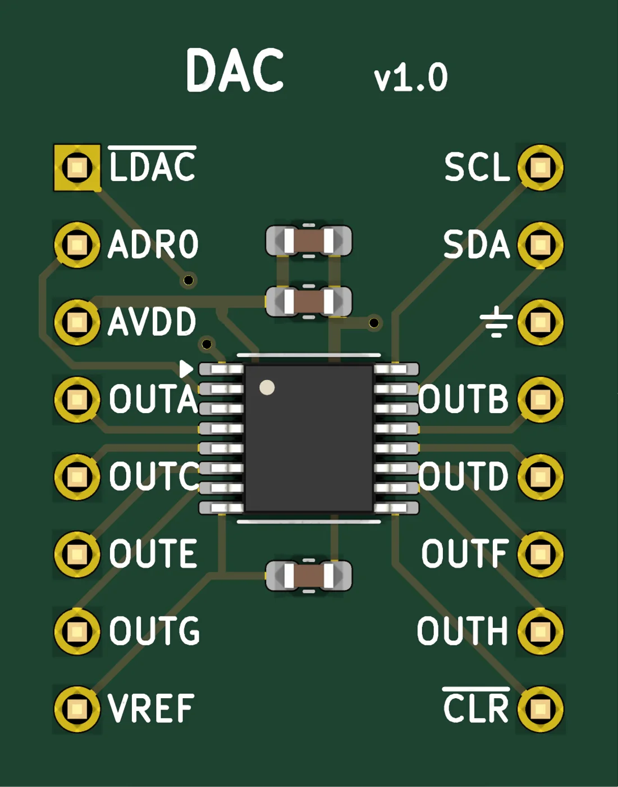
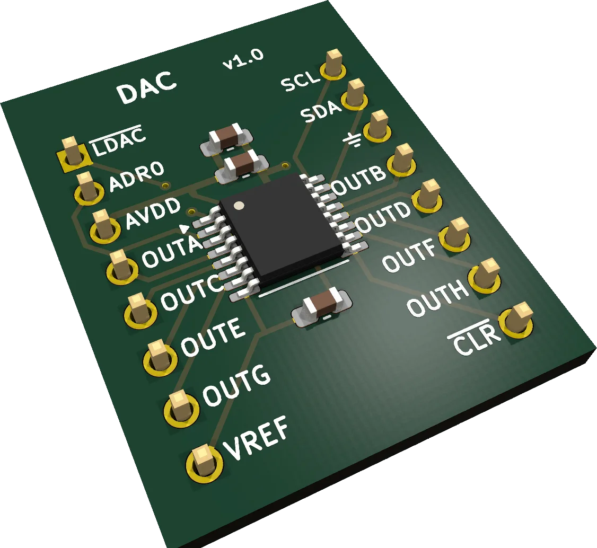
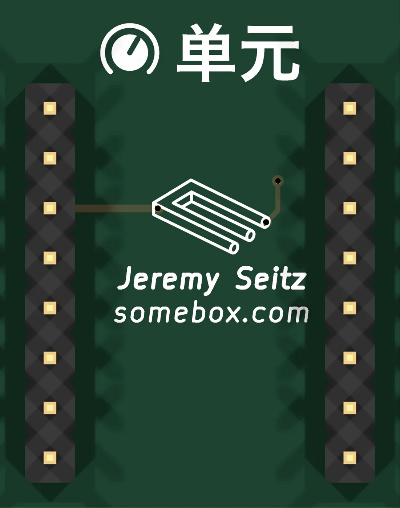
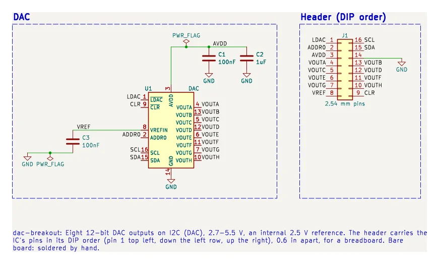

8-channel DAC breakout: 12-bit outputs over I2C
Eight 12-bit voltage outputs over I2C on a 0.6 in wide header, to try the DAC on a breadboard before building it into a board.
A breakout for an eight-channel, 12-bit DAC with an I2C interface and an internal 2.5 V reference. It is the converter on the test rig's CV output board, and I wanted to try it on a breadboard first. That's why its breakout went into the first order while the rig boards wait.
The chip and its decoupling sit on a board 0.8 in wide, its pins on two rows of 2.54 mm header 0.6 in apart in DIP order, each named beside its pad. It runs from 2.7 to 5.5 V and talks I2C at the same level, so it suits a Pico at 3.3 V or a 5 V microcontroller. Bare: I solder the chip and three capacitors by hand. Not built yet.
- Status
- In the first test order, being placed
- Version
- v1.0 (2026-10-26)
- Board
- 20.32 × 25.82 mm, 2 layers
- First order
- 5 on a snap-apart panel with the other IC breakouts, bare



What it does
- Eight 12-bit voltage outputs, OUTA to OUTH, set over I2C.
- Supply: AVDD 2.7 to 5.5 V; I2C at the same logic level.
- An internal 2.5 V reference, off at power-up. Switched on, the outputs span 0 to 5 V (with AVDD at 5 V for the full range).
- Or an external reference on VREF: the outputs then span 0 to VREF.
- 100 nF and 1 µF on AVDD, 100 nF on VREF.
- Three addresses: ADR0 to GND 0x48, to AVDD 0x4A, open 0x4C.
- 2 × 8 pins on a 2.54 mm pitch, rows 15.24 mm (0.6 in) apart.
- 20.32 × 25.82 mm, 0.8 in wide.
Pins
| LDAC (active low) | SCL |
| ADR0 | SDA |
| AVDD | GND |
| OUTA | OUTB |
| OUTC | OUTD |
| OUTE | OUTF |
| OUTG | OUTH |
| VREF | CLR (active low) |
Wiring and setup
- The header goes underneath, long pins down, soldered from the front.
- Tie LDAC to GND, so each write updates its channel at once.
- Tie CLR to AVDD: a falling edge on it clears every channel to zero.
- Pull-ups of 2.2k to 10k from SDA and SCL to AVDD, unless the bus already has them.
- Turn the internal reference on with its I2C command, or feed VREF from an external reference.
Limits and open questions
- Not built yet.
- A fine-pitch surface-mount chip: hot air is the easier way to solder it.
- The outputs reach 5 V at most. Eurorack levels need an op-amp stage after it, as on the rig's CV output board.
Development notes
- It comes on the snap-apart chip panel, bare. Trying it here first tells me how the rig's CV output board will behave before I order that.
Schematic
The schematic as drawn, with each chip named by its function rather than its part number. The design isn't open source yet, so there are no files to download.


Would you use a DAC? A thumbs-up on its tracking issue is how I count interest, and you can subscribe there to follow its bring-up. Questions and ideas go to the discussions.